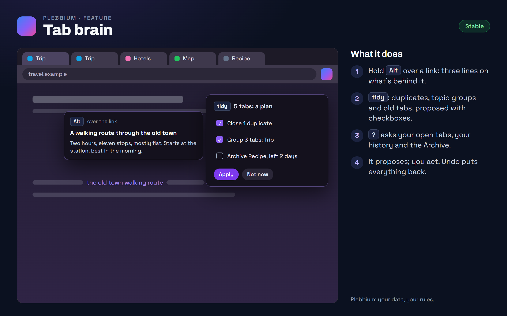

All features › Shipped › Tab brain
Tab brain
Stablesince 3604Pleb AI on your tabs, on your computer. Hold Alt over a link for three lines on what's behind it; type tidy to have duplicates closed and topics grouped, proposed first; ask your open tabs a question.

How to use it
- Preview: hold Alt over a link.
- Tidy: type tidy in the Everything bar, tick what you want, apply. Undo puts it back.
- Ask: ? and a question in the Everything bar. The answer says which tab it came from, and a click goes there.
When it arrived
156.0.8078.360418 Oct 2026 · Beta and Stable
Link previews, tidy and ask your tabs.
Why it works this way
It proposes; you act
A tidy is a list of checkboxes nothing happens without, and an answer cites the tabs it came from: the AI never changes anything by itself.
Previews as a stranger
A preview fetches the link without your cookies or logins and only from public addresses, so a page can't aim it at your router or your computer. It takes a real Alt key, which a page can't fake.
Useful without the AI
Tidy still closes duplicates and groups tabs by site when Pleb AI isn't installed.